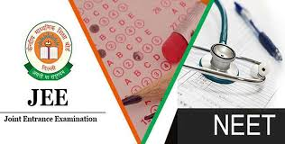
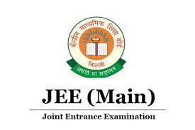
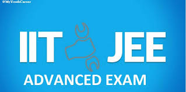
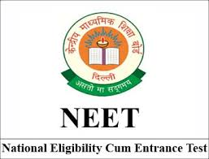

JEE & NEET
Subject wise exclusive video content


Subject wise youtube video lectures choose ur subject to view chapters


As in JEE 14 lakhs students appeared in the exam and approx 40000 students got colleges as per there rank whereas in NEET 6 lakhs students appeared in this exam and and only 5000 students would be able to take admission.
NEET is a single eligibility cum entrance examination namely 'National Eligibility-cum-Entrance Test for admission to MBBS/BDS courses' in each academic year. AIPMT was conducted by CBSE for selection of candidates for admission to 15% seats under All India Quota.
The Joint Entrance Examination (JEE) is an engineering entrance assessment conducted for admission to various engineering colleges in India. It is constituted by two different examinations: the JEE Main and the JEE Advanced.
The Joint Seat Allocation Authority (JoSAA)
conducts the joint admission process for a total of 24 Indian Institute of Technology campuses, 32 National Institute of Technology campuses, 18 Indian Institute of Information Technology campuses and 19 other Government Funded Technical Institutes (GFTIs) based on the rank obtained by a student in JEE Mains and JEE Advanced.[citation needed] There are some institutes, such as the Indian Institutes of Science Education and Research (IISERs), the Indian Institute of Petroleum and Energy (IIPE), the Rajiv Gandhi Institute of Petroleum Technology (RGIPT), the Indian Institute of Space Science and Technology (IIST), and the Indian Institute of Science (IISc), which use the score obtained in the JEE Advanced examination as the basis for admission. These institutes do not participate in the post-examination counselling session (JoSAA). Any student who takes admission to an Indian Institute of Technology cannot appear for the JEE Advanced examination again, but the same is not the case with IISc, IISERs, RGIPT, IIPE and IIST since they have separate and exclusive counselling sessions.JEE Main
JEE Advanced
 The top students who take the JEE-Main qualify for the JEE-Advanced examination. Student who secures a good AIR will get in to IIT's.The National Eligibility cum Entrance Test
National Council of Educational Research and Training

The design of the NCERT logo is taken from an Ashokan period relic of the 3rd century BCE which was found in excavations near Maski in Raichur district, Karnataka. The motto has been taken from the Isha Upanishad and means 'life eternal through learning'. The intertwined hansas symbolize the integration of the three aspects of the work of NCERT:
*Research and development
*Training
*Extension
Textbooks
Textbooks published by NCERT are prescribed by the Central Board of Secondary Education (CBSE) from classes I to XII, with exceptions for a few subjects. Around 19 school boards from 14 states have adopted or adapted the books. Online textbooks can be downloaded for free from the E-pathshala website.[4] Those who wish to adopt the textbooks are required to send a request to NCERT, upon which soft copies of the books are received. The material is press-ready and may be printed by paying a 5% royalty, and by acknowledging NCERT.[5] The textbooks are in color-print and are among the least valuable books in Indian bookstores. Textbooks created by private publishers are priced higher than those of NCERT.[5] According to a government policy decision in 2017, the NCERT will have the exclusive task of publishing central textbooks from 2018, and the role of CBSE will be limited to conducting examinations.[6]
.
Web design , Content gathering , web hosting , html.css coading by : UDAY KIRAN RATHOD .
This is my first html.css project ; status : incomplete ; Content source : youtube , google images , Wikipedia
for any information related to JEE / NEET / UPSC . CSE direct me to my insta click this icon-->
Chapter wise video lectures directly liked to youtube . One can revise entire syllabus of JEE / NEET as per individual subject . main theme is to make easy access of entire syllabus. HAPPY LEARNING***
Every project remains incomplete because new ideas / thoughts & designs strike to mind every time . This is an incomplete webpage only a little detail designing is done here.